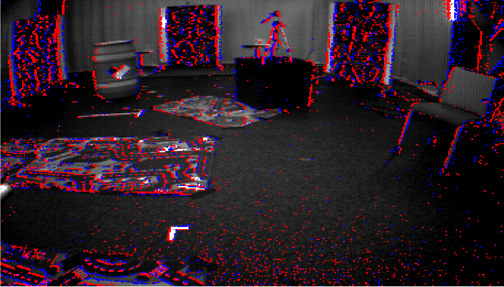
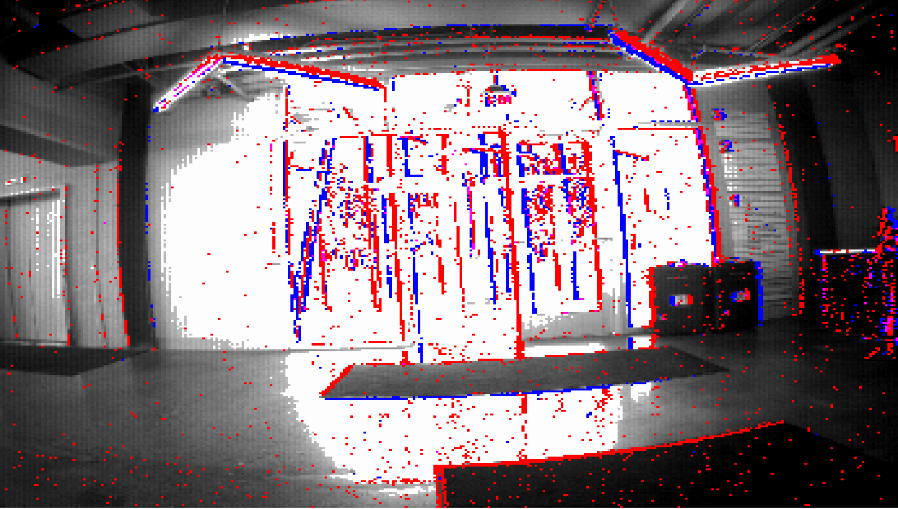
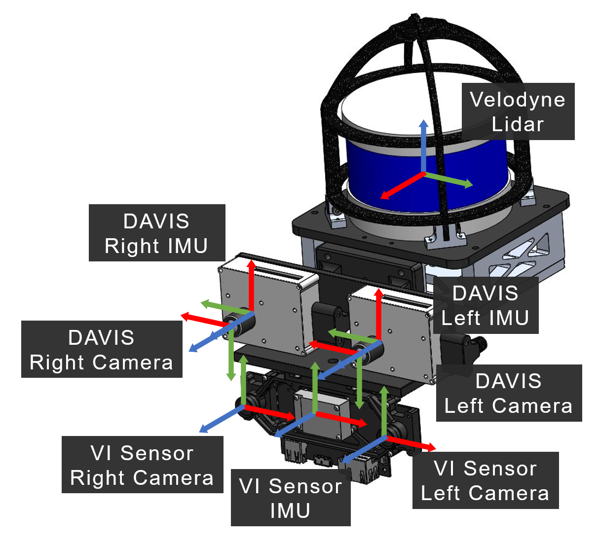
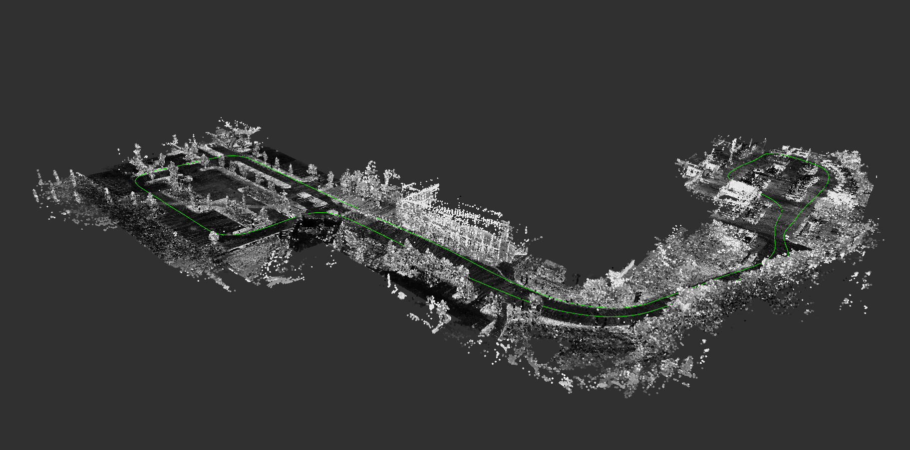

The MVSEC Dataset
The Multi Vehicle Stereo Event Camera Dataset

The Multi Vehicle Stereo Event Camera dataset is a collection of data designed for the development of novel 3D perception algorithms for event based cameras. Stereo event data is collected from car, motorbike, hexacopter and handheld data, and fused with lidar, IMU, motion capture and GPS to provide ground truth pose and depth images. In addition, we provide images from a standard stereo frame based camera pair for comparison with traditional techniques.
Event based cameras are a new asynchronous sensing modality that measure changes in image intensity. When the log intensity over a pixel changes above a set threshold, the camera immediately returns the pixel location of a change, along with a timestamp with microsecond accuracy, and the direction of the change (up or down). This allows for sensing with extremely low latency. In addition, the cameras have extremely high dynamic range and low power usage.
Sequences
|  |

|
 |
|
|
|
|

|

|
|
|
|
|
| Vehicle | Sequence |
| Hexacopter |
|
| Handheld |
|
| Outdoor Car |
|
| Motorcycle |
|

Sensors
 A number of different sensors and modalities and rigidly mounted to a stereo event camera pair, in order to generate accurate ground truth information, as well as to provide avenues for research in sensor fusion between modalities.For events, two experimental DAVIS 346B cameras are mounted in a stereo (X axes aligned) configuration. each camera has a resolution of 346x260 pixels, with a 4mm lens and roughly 70 degrees vertical field of view. The camera clocks are synchronized by a hardware trigger generated by the left camera and send to the right camera. In addition to events, the cameras also each generate IMU and frame based image measurements.
In addition, a Velodyne lidar and stereo frame based camera with IMU (VI Sensor) is mounted with the DAVIS cameras. When available, ground truth pose is also captured using an indoor (Vicon, left) or outdoor (Qualisys, right) motion capture system.
The full set of sensor characteristics can be found below:
| Sensor | Characteristics |
| DAVIS 346B |
|
| VI-Sensor |
|
| Velodyne Puck LITE |
|
| GPS |
|
Motion Capture |
|
Ground Truth
For most sequences, accurate pose and depths are provided from a fusion of the sensors onboard.

Citations
Please cite the following paper when using this work in an academic publication:
Zhu, A. Z., Thakur, D., Ozaslan, T., Pfrommer, B., Kumar, V., & Daniilidis, K. (2018). The Multi Vehicle Stereo Event Camera Dataset: An Event Camera Dataset for 3D Perception. arXiv preprint arXiv:1801.10202.